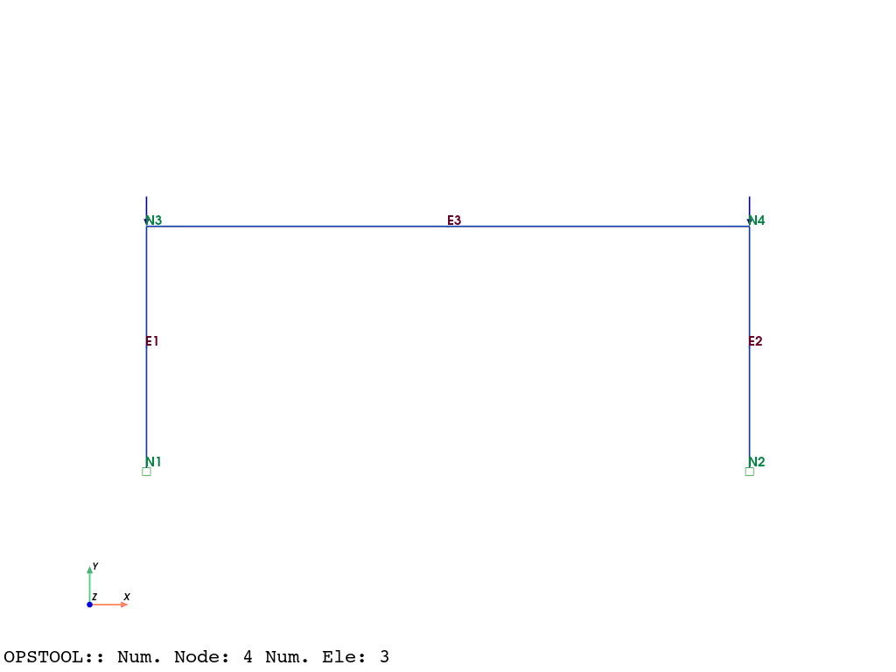
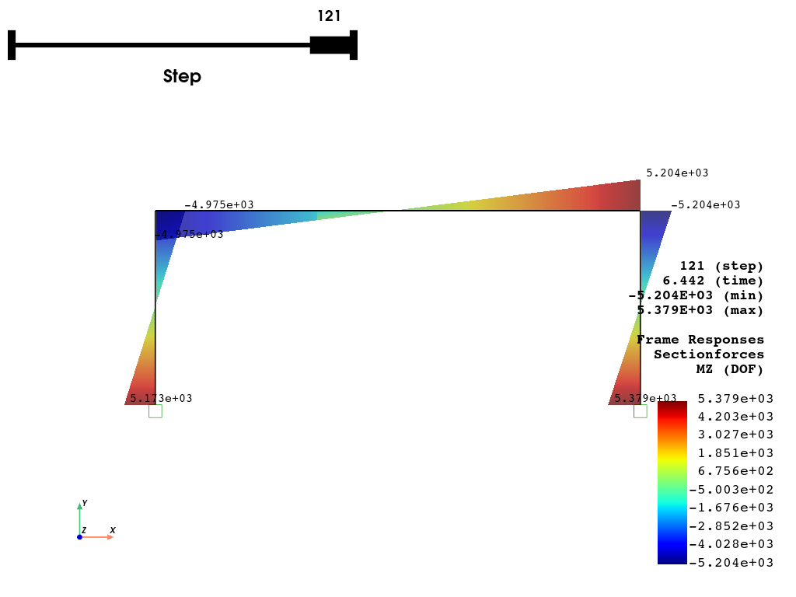
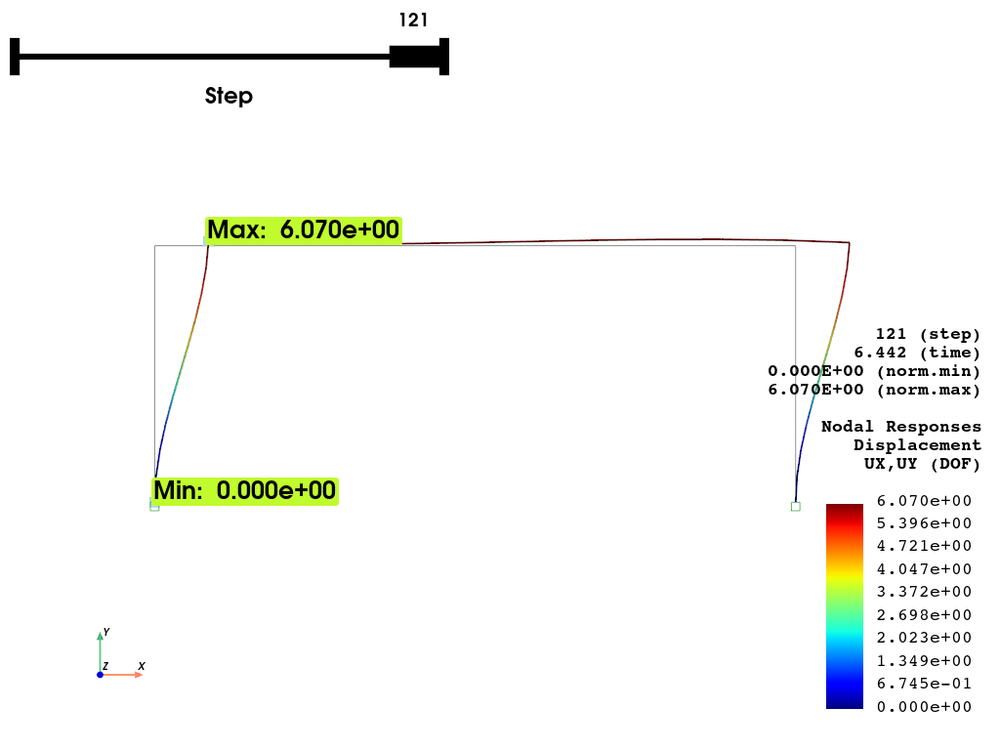

Note
Go to the end to download the full example code.
Reinforced Concrete Frame Pushover Analysis¶
This example builds and analyzes a simple reinforced concrete frame pushover analysis using OpenSeesPy.
import matplotlib.pyplot as plt
import openseespy.opensees as ops
import opstool as opst
Model Generation¶
ops.wipe()
# Create ModelBuilder (with two-dimensions and 3 DOF/node)
ops.model("basic", "-ndm", 2, "-ndf", 3)
# Create nodes
# ------------
# Set parameters for overall model geometry
width = 360.0
height = 144.0
# Create nodes
# tag, X, Y
ops.node(1, 0.0, 0.0)
ops.node(2, width, 0.0)
ops.node(3, 0.0, height)
ops.node(4, width, height)
# Fix supports at base of columns
# tag, DX, DY, RZ
ops.fix(1, 1, 1, 1)
ops.fix(2, 1, 1, 1)
# Define materials for nonlinear columns
# ------------------------------------------
# CONCRETE tag f'c ec0 f'cu ecu
# Core concrete (confined)
ops.uniaxialMaterial("Concrete01", 1, -6.0, -0.004, -5.0, -0.014)
# Cover concrete (unconfined)
ops.uniaxialMaterial("Concrete01", 2, -5.0, -0.002, 0.0, -0.006)
# STEEL
# Reinforcing steel
fy = 60.0 # Yield stress
E = 30000.0 # Young's modulus
# tag fy E0 b
ops.uniaxialMaterial("Steel01", 3, fy, E, 0.01)
# Define cross-section for nonlinear columns
# ------------------------------------------
# some parameters
colWidth = 15
colDepth = 24
cover = 1.5
As = 0.60 # area of no. 7 bars
# some variables derived from the parameters
y1 = colDepth / 2.0
z1 = colWidth / 2.0
ops.section("Fiber", 1)
# Create the concrete core fibers
ops.patch("rect", 1, 10, 1, cover - y1, cover - z1, y1 - cover, z1 - cover)
# Create the concrete cover fibers (top, bottom, left, right)
ops.patch("rect", 2, 10, 1, -y1, z1 - cover, y1, z1)
ops.patch("rect", 2, 10, 1, -y1, -z1, y1, cover - z1)
ops.patch("rect", 2, 2, 1, -y1, cover - z1, cover - y1, z1 - cover)
ops.patch("rect", 2, 2, 1, y1 - cover, cover - z1, y1, z1 - cover)
# Create the reinforcing fibers (left, middle, right)
ops.layer("straight", 3, 3, As, y1 - cover, z1 - cover, y1 - cover, cover - z1)
ops.layer("straight", 3, 2, As, 0.0, z1 - cover, 0.0, cover - z1)
ops.layer("straight", 3, 3, As, cover - y1, z1 - cover, cover - y1, cover - z1)
# Define column elements
# ----------------------
# Geometry of column elements
# tag
ops.geomTransf("PDelta", 1)
# Number of integration points along length of element
nps = 5
# Lobatto integratoin
ops.beamIntegration("Lobatto", 1, 1, nps)
# Create the coulumns using Beam-column elements
# e tag ndI ndJ transfTag integrationTag
eleType = "forceBeamColumn"
ops.element(eleType, 1, 1, 3, 1, 1)
ops.element(eleType, 2, 2, 4, 1, 1)
# Define beam elment
# -----------------------------
# Geometry of column elements
# tag
ops.geomTransf("Linear", 2)
# Create the beam element
# tag, ndI, ndJ, A, E, Iz, transfTag
ops.element("elasticBeamColumn", 3, 3, 4, 360.0, 4030.0, 8640.0, 2)
# ------------------------------
# End of model generation
# ------------------------------
Define gravity loads¶
# a parameter for the axial load
P = 180.0 # 10% of axial capacity of columns
# Create a Plain load pattern with a Linear TimeSeries
ops.timeSeries("Linear", 1)
ops.pattern("Plain", 1, 1)
# Create nodal loads at nodes 3 & 4
# nd FX, FY, MZ
ops.load(3, 0.0, -P, 0.0)
ops.load(4, 0.0, -P, 0.0)
# Gravity analysis
ops.system("BandGeneral")
ops.constraints("Transformation")
ops.numberer("RCM")
ops.test("NormDispIncr", 1.0e-12, 10, 3)
ops.algorithm("Newton")
ops.integrator("LoadControl", 0.1)
ops.analysis("Static")
ops.analyze(10)
Plot the model with loads
opst.vis.pyvista.plot_model(show_nodal_loads=True, show_node_numbering=True, show_ele_numbering=True).show()

Pushover Analysis¶
# Set the gravity loads to be constant & reset the time in the domain
ops.loadConst("-time", 0.0)
# ----------------------------------------------------
# Start of additional modelling for lateral loads
# ----------------------------------------------------
# Define lateral loads
# --------------------
# Set some parameters
H = 10.0 # Reference lateral load
# Set lateral load pattern with a Linear TimeSeries
ops.pattern("Plain", 2, 1)
# Create nodal loads at nodes 3 & 4
# nd FX FY MZ
ops.load(3, H, 0.0, 0.0)
ops.load(4, H, 0.0, 0.0)
# ----------------------------------------------------
# Start of modifications to analysis for push over
# ----------------------------------------------------
# Set some parameters
dU = 0.05 # Displacement increment
# Change the integration scheme to be displacement control
# node dof init Jd min max
ops.integrator("DisplacementControl", 3, 1, dU, 1, dU, dU)
# Set some parameters
maxU = 6.0 # Max displacement
currentDisp = 0.0
ok = 0
ops.test("NormDispIncr", 1.0e-6, 1000)
ops.algorithm("KrylovNewton")
Create the Output Database to store results, and perform the pushover analysis
ODB = opst.post.CreateODB(odb_tag=1, interpolate_beam_disp=11)
while ok == 0 and ops.nodeDisp(3, 1) < maxU:
ok = ops.analyze(1)
if ok != 0:
print("KrylovNewton newton failed")
break
ODB.fetch_response_step()
ODB.save_response()
print("Pushover analysis completed.")
OPSTOOL™ :: All responses data with _odb_tag = 1 saved in G:\opstool\docs\.opstool.output\RespStepData-1.odb!
Pushover analysis completed.
Postprocessing¶
nodal_resp = opst.post.get_nodal_responses(odb_tag=1)
nodal_resp
OPSTOOL™ :: Loading all response data from G:\opstool\docs\.opstool.output\RespStepData-1.odb ...
# Nodal total reactions
nodal_reactions = nodal_resp["reaction"].sum(dim="nodeTags")
nodal_reactions_ux = nodal_reactions.sel(DOFs="UX")
# nodal 3 displacement
nodal_disp_3 = nodal_resp["disp"].sel(nodeTags=3, DOFs="UX")
# Plot the pushover curve
fig, ax = plt.subplots(figsize=(6, 4))
ax.plot(nodal_disp_3.data, -nodal_reactions_ux.data, marker="o")
ax.set_xlabel("Top Displacement at Node 3")
ax.set_ylabel("Base Shear")
ax.set_title("Pushover Curve")
ax.grid(True)
plt.show()
Plot the pushover results
opst.vis.pyvista.plot_frame_responses(
odb_tag=1,
slides=True,
resp_type="sectionForces",
resp_dof="Mz",
scale=1.0,
style="surface", # "wireframe", "surface"
opacity=0.75, # opacity for "surface" style
show_values="eleMaxMin",
show_bc=True,
bc_scale=2.0,
).show()

OPSTOOL™ :: Loading responses data from G:\opstool\docs\.opstool.output\RespStepData-1.odb ...
Plot the nodal displacements with interpolation for beam elements
opst.vis.pyvista.plot_nodal_responses(
odb_tag=1,
slides=True,
resp_type="disp",
resp_dof=("UX", "UY"),
show_defo=True,
interpolate_beam_disp=True,
defo_scale=5,
show_undeformed=True,
).show()

OPSTOOL™ :: Loading responses data from G:\opstool\docs\.opstool.output\RespStepData-1.odb ...
fig = opst.vis.plotly.plot_nodal_responses(
odb_tag=1,
slides=False,
resp_type="disp",
resp_dof=("UX", "UY"),
show_defo=True,
interpolate_beam_disp=True,
defo_scale=5,
show_undeformed=True,
)
fig
# fig.show()
OPSTOOL™ :: Loading responses data from G:\opstool\docs\.opstool.output\RespStepData-1.odb ...
Total running time of the script: (0 minutes 3.012 seconds)